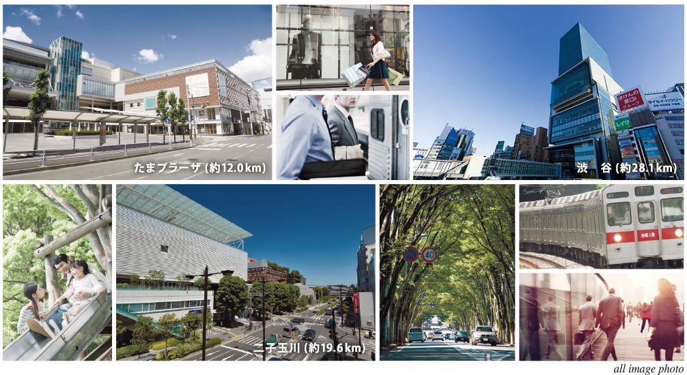
自然と都会の魅力が融合した
東急田園都市線。
渋谷から中央林間まで延びる東急田園都市線。
話題の街や再開発が進む街が並んだ、
進化を続ける沿線を日常利用できます。
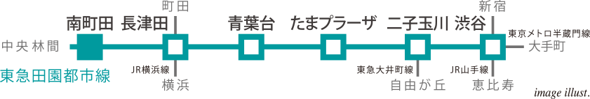
駅徒歩6分の快適なアクセス。
「プロスタイル南町田」は、準急停車駅である「南町田」駅から徒歩6分。
毎日の通勤やお出掛けに快適なアクセスが実現します。
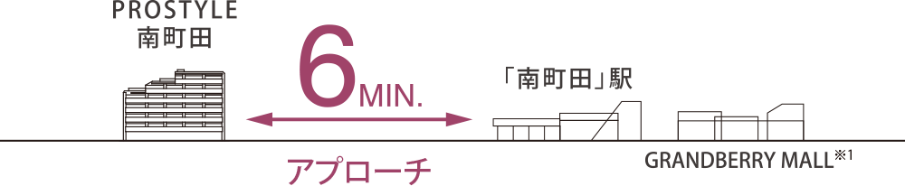
※概念図は実際の街並の断面図ではなく、平成28年6月現在の街並の広がりをイメージして
図案化したもので、実際とは異なります。
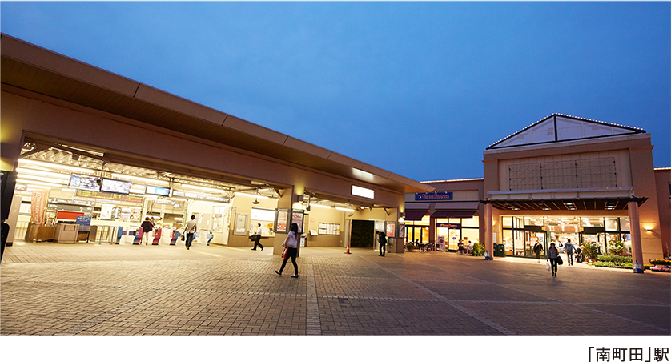

「南町田」駅南口には、沿線のみならず広いエリアから人を集める駅直結のグランベリーモール※1があります。東急ストアを始め、有名ブランドショップやカフェ・レストラン、映画館など約100店舗のショップが集まった大型ショッピングモールです。またグランベリーモールの隣には総面積約56,000㎡もの広さを誇る鶴間公園が広がり、豊かな緑が訪れた人の気分をリフレッシュさせてくれます。日常のお買い物の後にカフェを利用したり、映画館へ行った後に公園で遊んだりと、さまざまな使い方が楽しめます。このグランベリーモールや鶴間公園とその周辺の一体利用や、駅南北の行き来がしやすくなる再整備が現在計画中。再整備エリア内でのつながりが生まれ、回遊性の高い空間が創出されます。2019年度完成を目指すこの再整備によって、南町田はさらに賑わいに満ちた街に生まれ変わり、より活気に溢れていきます。
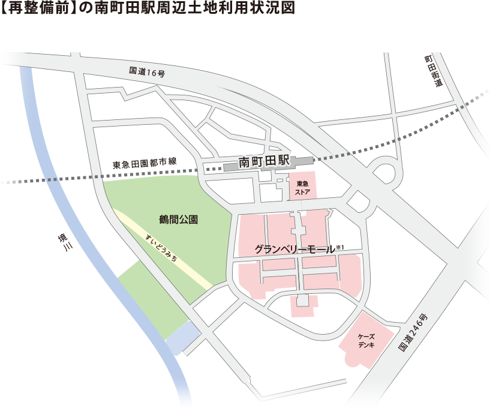
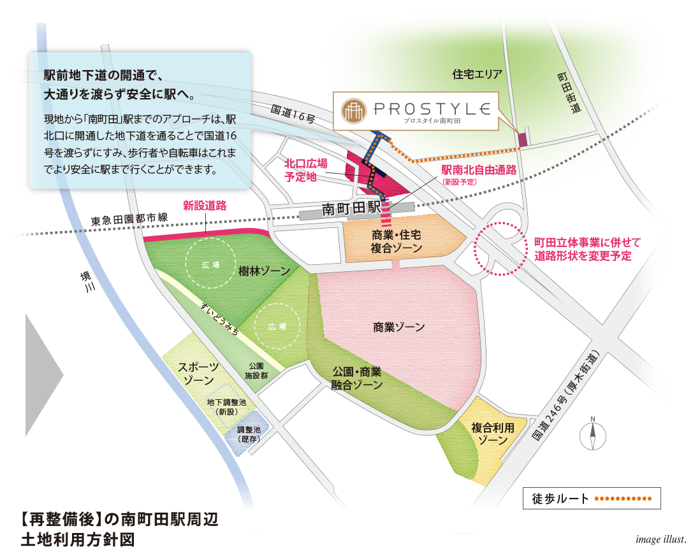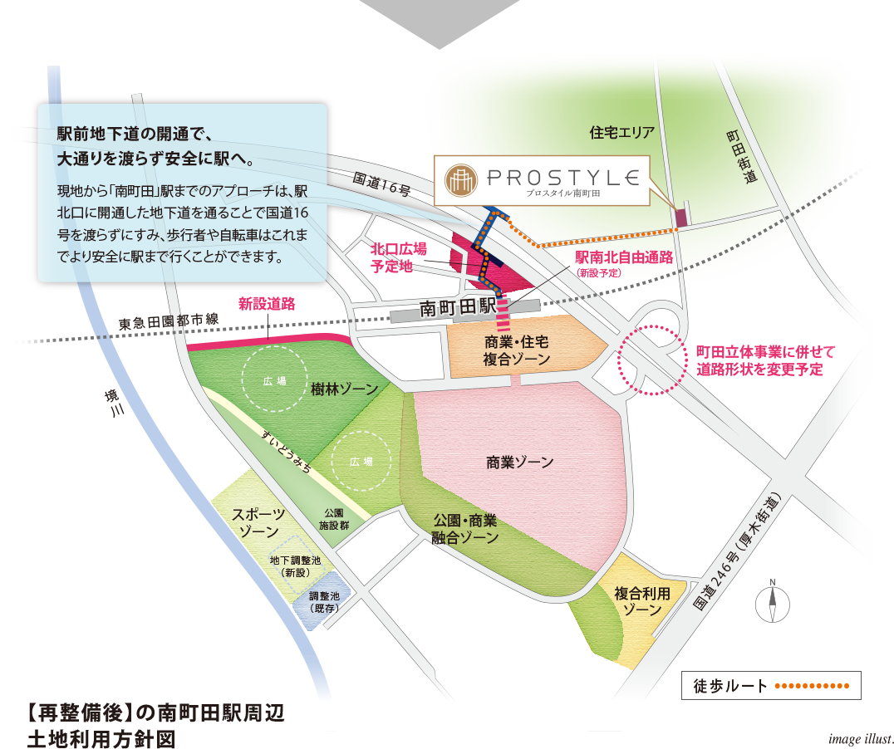
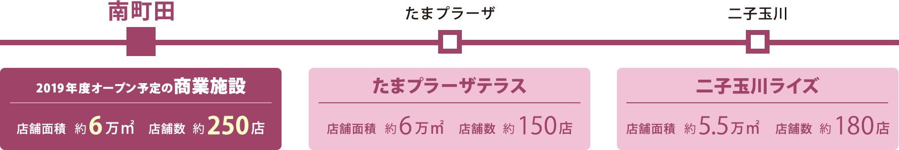
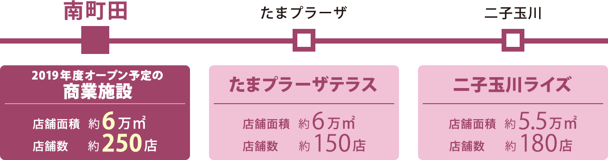
東急田園都市線には、二子玉川ライズやたまプラーザテラスなど、駅直結の大型商業施設がいくつかあります。南町田においても、グランベリーモールが2019年度に新しい商業施設としてオープン予定。それによって南町田は、二子玉川やたまプラーザに並ぶ商業拠点として注目を集めるでしょう。
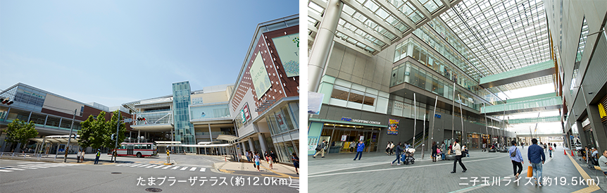
※「南町田駅周辺地区拠点整備基本方針（2015年6月）」の内容より一部抜粋。
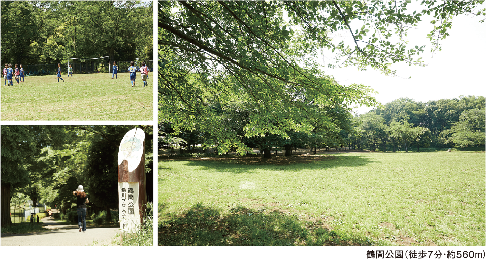

大人も子どもも学べるスポーツクラブが充実。
身近に多彩なスポーツクラブが点在する南町田。徒歩圏内にゴルフやテニス、フットサルなど、習い事としてお子様が通えるスクールや趣味の場として大人も利用できるクラブが充実しています。暮らしにスポーツを取り入れやすく、健康的な生活を満喫できる環境です。
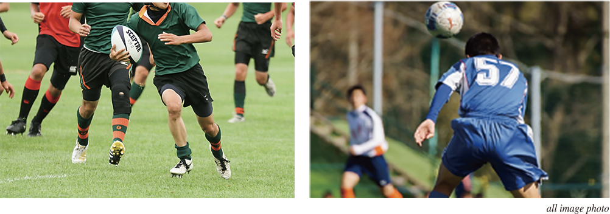
町田市にはプロサッカーのJ2やフットサル、ラグビーなど、町田市をホームとするスポーツチームがあります。また、全国・世界レベルで活躍し、町田のスポーツ界に貢献した選手やスタッフなどを町田市が表彰する「スポーツアワードまちだ」が制定されているなど、街としてスポーツに力を入れています。
※現地周辺イメージイラストは説明のためのもので、形状、色、スケール、位置等は実際とは異なります。
「プロスタイル南町田」は厚木街道や町田街道、大和バイパスといった幹線道路から一本奥へ入った住宅街に誕生します。大通りの喧騒から離れたこの場所には、静かな住環境が広がっており、落ち着いた暮らしが日常となります。
三面を道路に囲まれた、開放的な立地に位置する「プロスタイル南町田」。三方角地という敷地の特性を活かした、清々しい風を感じられる、明るく爽やかな住まいが実現します。
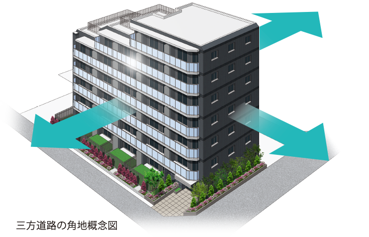
※掲載の図面は計画段階の設計図を基に描き起こしたもので、施工上の都合などにより多少変更になる場合がございます。なお、植栽は特定の季節の状況を示すものではありません。又、敷地内の植栽の樹種、大きさについては未確定となっており、竣工時には、完成予想CG程度には成長しておりません。周辺の建物は省略しております。
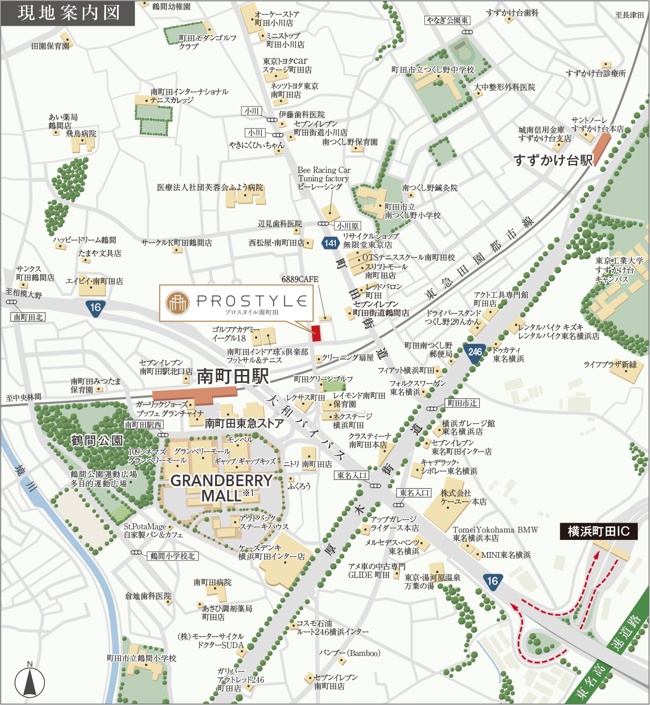
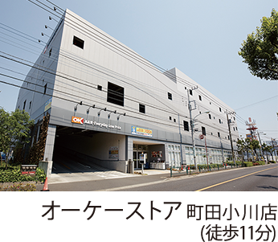
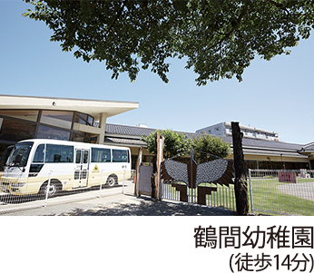
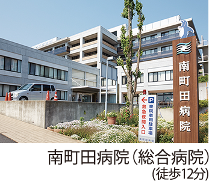
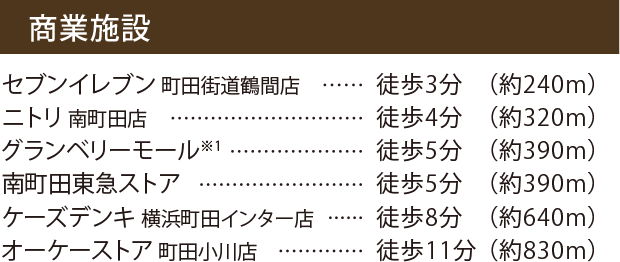
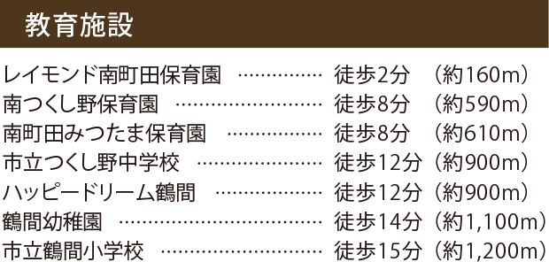
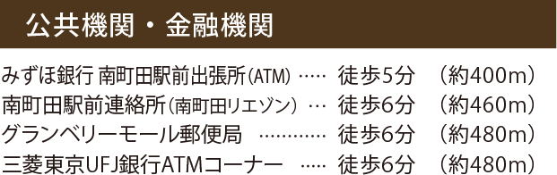
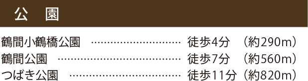
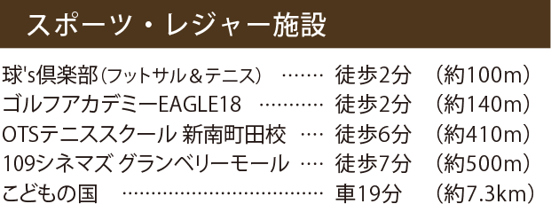
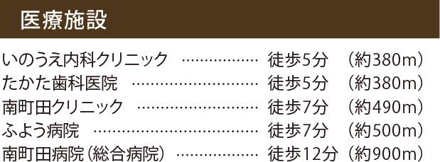
※掲載の徒歩分数は、80mを1分として算出し、端数を切り上げたものです。また車の移動分数は、実測によるものです。
※掲載の内容は平成28年6月現在のもので、今後変更となる場合がございます。
※1 グランベリーモールは、「南町田」駅周辺の再整備によって平成29年2月12日に閉館。平成31年度中に新たな商業施設がオープンする予定です。